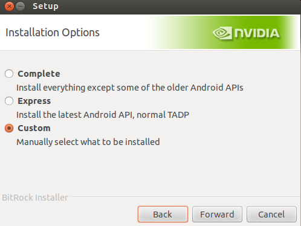
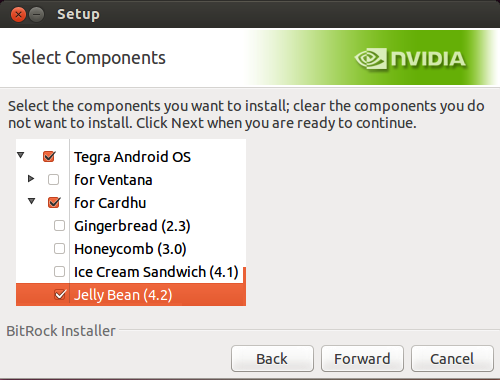
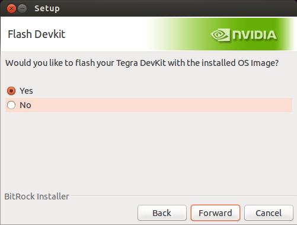

To develop Android applications you need many tools, such as the Android SDK, the Android NDK, Java, the Eclipse IDE, the Android Development Tools (ADT), and command line (bash on Mac or Linux, Cygwin on Windows). To simplify installation, NVIDIA has created the Tegra Android Development Pack (TADP), a single file that installs everything you need.
To download the Tegra Android Development Pack 2.0 you will to become a member of the Tegra Registered Developer Program. Please visit the NVIDIA Developer Zone, create an account (it is free and easy) and then apply for membership to the Tegra Registered Developer Program.
Then,
Download the latest TADP.
Run the installer.
Ubuntu notes
Set the executable attribute on the downloaded file:
$ chmod a+x tegra-devpack-20-linux-x64-2013-05-09-15755747.run
The installer requires a Java runtime installed. If you get a message that Java is missing, install openjdk jre.
$ sudo apt-get install openjdk-7-jre
At the Installation Options prompt, select Custom.
Select the following components; the list of available components will vary by OS.
The main deviation from the default values are that you may want to skip Nsight (available on Windows only, allows development with Visual Studio, not covered in this tutorial).
Select the installation folder, and any proxy configuration if needed to access internet, and the installer will begin to download the selected components.
After the installation files are downloaded (which may take a while) the TADP will be installed on your computer.
Ubuntu notes
The default installation directory for TADP is ~/NVPACK. You can create a link to Eclipse in your desktop by opening the ~NVPACK/eclipse folder, creating a link to Eclipse and dragging it to the desktop.
Windows notes
The Windows installer has the option to install Nsight for Tegra development. Note that Nsight requires Visual Studio and will fail to install if Visual Studio is not present. If this is the case, just ignore the message and continue with the installation.
From now on we refer to the NVPACK installation directory as $NVPACK_PATH, you should create such an environment variable. If the environment variables are not visible to Eclipse (e.g., on Mac if you launch Eclipse via Spotlight), you need to define it inside Eclipse. Go to Preferences > C/C++ > Build > Environment and Add variable NVPACK_PATH and give it the correct value (such as C:\NVPACK or where ever you installed NVPACK).
Launch Eclipse (it’s installed in the eclipse folder under NVPACK); when prompted for a workspace, use the one that came with TADP: $NVPACK_PATH/nvsample_workspace.
The Android Eclipse plugins require a matching version of the Android SDK Tools. Go to Window > Android SDK Manager to update your SDK tools:
Check the Android SDK Tools and the Android SDK Platform-Tools. Click on Install 2 packages. After the update finishes, you may be prompted to check for updates of the Eclipse Plugin, which we already did.
The Android NDK provides the compiler toolchain to build C and C++ code into native binaries. Native modules are usually used to write optimized code or port existing C / C++ code into Android. In addition, such modules are built and debugged separately from Java code, because there is no Java VM involved. The TADP installs the Android NDK.
For this tutorial, we will use the Android NDK r8e. Go to the Android NDK web site, download the package for your OS, and unpack it.
Copy the android-ndk-r8e folder to $NVPACK_PATH folder.
Note
There is a simple to fix bug in the r8c release of the NDK that causes every object to be rebuilt even when no changes have been done to the source. See Issue 39810. To fix the issue line 289 in android_ndk_r8c/build/core/definitions.mk needs to be changed from:
$1: $$(__ndk_file_dir)
to:
$1: | $$(__ndk_file_dir)
To set up the Android Preferences in Eclipse go to Window > Preferences > Android (on Mac: Eclipse > Preferences > Android). You will see a list of installed SDK.
Look for the SDK Location, it should point to the root of your SDK directory (TADP sets this up for you).
Change the NDK path under Preferences > Android > NDK. Set the path to point to the recommended release of the Android NDK.
After making your changes, click OK to close the window.
The Android SDK is maintained by Google and is updated frequently. The SDK consists of:
SDK Tools: Basic set of development and debugging tools. Includes the Android SDK Manager, the Android Emulator, and other tools required to build your applications.
SDK Platform Tools: The most important of the platform tools is the Android Debug Bridge (adb), which allows you to connect to your device, install and uninstall applications, view logs, and run shell commands.
SDK Platform: For every Android API that has been released, there is a corresponding Android Platform SDK. Each new Platform SDK adds new APIs and maintains backward compatibility with previous ones. If you use the smallest API level that includes the APIs that you need, your application runs on more systems than if you require a newer API.
Vendor APIs: In addition, hardware vendors can release their own SDKs to work with additional features available on their devices.
See also
Google’s official Installing the SDK.
Unlike regular Android devices, Cardhu (and other NVIDIA Devkit) has to be updated manually. If you are using one for this tutorial, please make sure it is running the latest Jelly Bean. This not only gives you the benefit from the latest Android system, but also ensure new OpenCV and FCam are pushed to the device.
Flashing your Cardhu is easy. First, you need to download the latest OS image. This can be done by following the same procedure of installing TADP. If you select Custom and drag down the menu, OS image option is at the bottom.

Once the image is downloaded, it will prompt you an option to flash the device.

Following the manual to connect the debug board to the devkit, before hitting okay.
After awhile, Cardhu will reboot itself and you are ready to go!
In order to install and debug applications on the device through the USB connection, you have to enable USB debugging. On the tablet, tap on Settings > Developer options and check USB debugging.
This will enable you to connect to the device from the host computer using adb. To verify your device is ready for development run adb devices to see a list of attached devices:
You will also see the device in Eclipse in the Devices tab. If the tab is not visible, you can open the tab from Window > Show View > Other... > Android > Devices.
We have provided some sample codes as part of the tutorial in tutorial.zip. Please download and unzip it. We will call it the /tutorials folder from now on.
You are now ready to create your first Eclipse project.


{kind=link}
{kind=link}
{kind=link}
{kind=link}
{kind=link}
{kind=link}
{kind=link}
{kind=link}